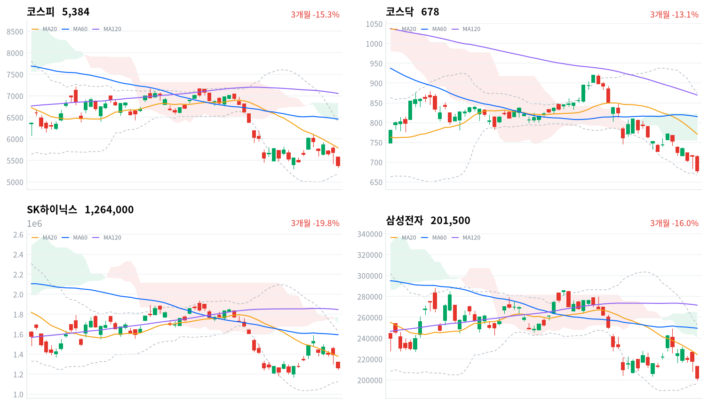

미국 중간선거 뒤 AI 데이터센터 규제 우려가 번지며 외국인이 코스피에서 3조4,185억원을 순매도했고(당일 잠정), 반도체·AI 서버 부품·전력기기 대형주가 함께 급락했다. 개인과 기관이 3조원 넘게 샀지만 코스피는 5.28% 내린 5,383.80으로 마감해 종가로 5,400선을 내줬다.
규제는 아직 공약 단계이고 메모리 수요가 줄었다는 1차 자료는 없어, 이 매도는 수요 전망의 하향보다 정책 불확실성이 부른 위험 축소로 본다. 이 판단은 11월 6일 SK하이닉스 종가와 11월 17일(미국 시간) 엔비디아 실적에서 확인한다.
미국 중간선거에서 민주당이 상·하원과 주지사 과반을 확보했고, 주지사 당선자 36명 가운데 34명이 데이터센터 규제에 찬성했다는 보도가 나왔다. 직전 11월 4일 미국 세션에서 다우와 S&P500은 올랐지만 필라델피아 반도체지수는 3.1% 내렸다. 이날 한국에서는 외국인이 5거래일 연속 순매도했고, 매도는 반도체를 넘어 AI 서버 부품(삼성전기 -15.34%)과 전력기기(LS ELECTRIC -13.87%)까지 번졌다.
장 마감 뒤 보도는 하락을 규제로 데이터센터 인허가가 늦어지면 반도체 수요 증가세가 둔화할 수 있다는 우려로 설명한다. 이 설명이 짚은 하락의 계기에는 동의한다. 다만 같은 보도도 실제 투자 축소나 수요 둔화는 아직 확인되지 않았다고 적었고, 규제는 입법이나 행정조치가 없는 공약 단계다. 그래서 이 매도는 메모리 수요 전망의 하향보다 미국 정책 불확실성이 부른 위험 축소로 판단한다. 기업 이익 전반이 나빠질 것으로 봤다면 회사채 금리차가 먼저 벌어졌을 텐데, 회사채 AA- 3년물과 국고채 3년물의 차이는 0.3bp 넓어지는 데 그쳤다. 그 수준은 최근 2년(533거래일) 가운데 이보다 넓었던 날이 43일뿐일 만큼 이미 넓다.
하락이 AI 하드웨어에 몰린 모양만으로는 두 설명을 구분하기 어렵다. 반도체 대형주와 서버 부품·전력기기가 내리고 은행·제약·인터넷 플랫폼이 오른 모습은 수요 재평가와도, 위험 축소와도 부합한다. 우리가 위험 축소로 보는 근거는 수요 쪽 1차 자료와 증권가 목표주가가 바뀌지 않았다는 점이다. 반대로 시장이 2027년 AI 서버 발주 지연을 먼저 반영하기 시작했을 수도 있다. 10월 30일 이후 SK하이닉스가 코스피보다 4.81%포인트 더 내려, 지난주 급락을 일시적 심리 충격으로 본 판단은 이미 약해졌다. 두 설명은 엔비디아 실적·가이던스, 빅테크의 설비투자 언급, 메모리 가격 자료로 구분된다. 외국인 매도의 약 70%가 두 대형주에 몰렸다는 집계는 있지만, 업종별 순매매 자료가 없어 국내 매수가 어느 업종으로 갔는지는 알 수 없다.
새로 제안할 상품은 없다. 이날 한국 장은 반도체·AI 하드웨어와 전력망 투자 테마가 같은 정책 위험에 함께 팔린다는 것을 보여 줬다. 그러나 수요 자료가 바뀌기 전이라 두 테마의 석 달 전망을 바꿀 근거는 아직 없다. 개인과 기관이 3조원 넘게 사고도 지수를 받치지 못해, 외국인 매도가 멈추기 전에는 하락이 끝났다고 보기 이르다. 가장 가까운 결정적 일정은 11월 6일 KRX 종가로 재는 SK하이닉스와 코스피의 수익률 차이(10월 30일 종가 대비)다.
코스피가 11월 5일 기준 20일 저점 5,306 아래에서 마감하면, 매도가 AI 하드웨어 체인에 몰린 위험 축소이고 반도체 밖 업종과 국내 자금이 지수 하단을 받친다는 오늘 판단을 철회한다. 이 선은 60일 저점이기도 해서, 종가로 내주면 석 달 만의 새 저점이 된다. 그 경우 매도가 체인 밖으로 번졌다고 보고, 수요 재평가를 우선 설명으로 본다.
출처: 서울경제, 연합뉴스, 뉴스1, 헤럴드경제
직전 11월 4일 미국 세션에서 다우는 3.03%, S&P500은 1.58%, 나스닥은 1.44% 올랐다. 반면 필라델피아 반도체지수는 6개월여 만의 최저로 내렸고, 엔비디아·인텔이 내린 사이 아마존은 6% 넘게 올랐다는 보도가 나왔다. 이날 아시아에서는 항셍(+3.67%)과 상해종합(+0.10%)이 오르고 대만가권(-3.20%)과 닛케이(-1.79%)는 내렸다. 코스피는 네 지수 평균보다 4.98%포인트 약했다.
코스피는 전일 종가 5,684보다 1.8% 낮은 5,580에서 갭 하락으로 출발했고, 시가 직후의 5,586이 그날 고가였다. 한국 정규장 동안 나스닥 선물은 0.89%, S&P500 선물은 0.22% 내려 미국 선물도 기술주 쪽이 더 약했다.
코스피는 하루 범위(5,337~5,586)의 아래쪽 5분의 1 지점에서 마감했다. 오전 10시 16분 코스피에 매도 사이드카가 발동됐고 코스닥에도 이어졌다. 코스닥도 장중 673까지 밀린 뒤 저점 부근에서 끝났다. 원화는 장중 소폭 약했다.
외국인이 반도체·AI 부품 대형주를 팔고 개인과 기관이 받았지만, 국내 매수가 지수를 받치지 못한 날이다. 장중에는 기관 순매수가 줄면 지수가 밀리고 늘면 반등했으나, 오후 들어 외국인 순매도가 커지며 기관 매수로도 하락을 막지 못했다는 보도가 나왔다. 같은 시간 인터넷 플랫폼·제약·은행·자동차는 올랐다. 시간외 거래 자료는 없어 장 마감 뒤 흐름은 확인하지 못했다.
출처: 연합뉴스, 한국경제TV, 뉴스1, 디지털데일리, 뉴스핌
두 지수가 5% 넘게 내렸다. 코스피는 5.28% 내린 5,384, 코스닥은 5.11% 내린 678.41로 마감했다. 코스피가 종가로 5,400 아래에 선 것은 4월 3일 이후 처음이라는 보도가 나왔고, 코스닥은 700선 아래로 내려왔다.
| 지수 | 종가 | 등락률 | 시가 | 고가 | 저가 | 전일 종가 |
|---|---|---|---|---|---|---|
| 코스피 | 5,383.80 | -5.28% | 5,580.09 | 5,586.46 | 5,336.88 | 5,683.80 |
| 코스닥 | 678.41 | -5.11% | 713.49 | 717.06 | 673.38 | 714.95 |
전날과 달리 오후 반등이 없었다. 코스피는 오전 11시 30분 5,500까지 되돌렸다가 오후 내내 밀려 15:00에 5,359까지 내려갔고, 저점 부근에서 끝났다. 장중 낙폭을 대부분 되찾았던 11월 4일과 달리 오후 매도가 마감까지 이어졌다.
출처: 서울경제
| 주체 | 순매수(억원) |
|---|---|
| 개인 | +22,864 |
| 외국인 | -34,185 |
| 기관 | +8,525 |
| 주체 | 순매수(억원) |
|---|---|
| 개인 | +1,713 |
| 외국인 | -728 |
| 기관 | -1,027 |
외국인 매도가 커졌고 국내 자금은 그만큼 받지 못했다. 외국인은 코스피에서 3조4,185억원을 순매도해(전일 2조4,528억원 순매도, 당일 잠정) 5거래일 연속 팔았고, 다섯 세션 합계는 9조3,793억원이다. 개인은 2조2,864억원(전일 9,629억원), 기관은 8,525억원(전일 1조1,334억원)을 순매수했다.
달라진 것은 기관이다. 개인 매수는 전날의 두 배를 넘었지만 기관 매수는 전날보다 줄었다. 외국인 순매도의 약 70%(2조7,000억원)가 삼성전자와 SK하이닉스에 몰렸다는 집계가 나왔고, 외국인은 코스피200 선물에서는 4,910계약을 순매수했다는 보도도 나왔다. 매체마다 집계 시점이 달라 보도된 외국인 합계(3조3,928억원~3조4,213억원)는 표와 다르다. 전일 값도 이날 다시 받은 잠정치라 지난 글의 외국인 2조4,841억원 순매도와 조금 다르다.
코스닥에서는 개인이 1,713억원을 사고 기관(1,027억원)과 외국인(728억원)이 팔았다. 지수는 코스피와 비슷하게 내렸지만 수급 규모는 코스피의 수십 분의 일이다.
장중 누적 수급과 프로그램 매매는 받을 수 있는 자료가 없어 싣지 않는다.
출처: 서울경제, 비즈워치, 뉴스1, 연합뉴스
| 순위 | 종목/ETF | 구분 | 거래대금 | 비고 |
|---|---|---|---|---|
| 1 | SK하이닉스 | 개별주 | 5.35조원 | - |
| 2 | 삼성전자 | 개별주 | 4.92조원 | - |
| 3 | 반도체 테마 ETF | 테마·롱 | 2.11조원 | 29종 합산 |
| 4 | 삼성전기 | 개별주 | 1.34조원 | - |
| 5 | 삼성전자우 | 개별주 | 0.63조원 | - |
| 6 | SK스퀘어 | 개별주 | 0.57조원 | - |
| 7 | 2차전지 테마 ETF | 테마·롱 | 0.51조원 | 14종 합산 |
| 8 | 삼성SDI | 개별주 | 0.50조원 | - |
| 9 | KODEX CD금리액티브(합성) | 단기금리·현금성 | 0.45조원 | - |
| 10 | 셀트리온 | 개별주 | 0.42조원 | - |
단위 백만원 원본을 조 단위로 환산했다. 같은 기초자산 ETF는 방향별로, 같은 테마 섹터 ETF는 테마별로 묶고 지수·해외 ETF는 제외했다.
거래는 하락을 이끈 반도체와 AI 서버 부품에 몰렸다. SK하이닉스(5.35조원)·삼성전자(4.92조원)·반도체 테마 ETF 29종 합산(2.11조원)이 1~3위였고, 전날 4위였던 삼성전기는 1.34조원으로 거래가 늘었다. 삼성전기의 공매도 거래대금이 전일보다 93.8% 늘었다는 보도도 나왔다. 거래대금만으로는 순유입인지 순유출인지 알 수 없다.
상위 10개 가운데 주가가 오른 것은 셀트리온(0.42조원) 하나였다. 2차전지 테마 ETF 14종 합산(0.51조원)과 삼성SDI(0.50조원)는 전날 급등 뒤 내린 날에도 거래가 많았고, 표 안에 인버스 상품은 없었다.
출처: 톱스타뉴스
하락은 깊었지만 넓지는 않았다. 대표 ETF 기준 12개 섹터 가운데 8개가 내렸고, 반도체(-11.26%)와 방산(-7.55%)이 가장 약했다. 소프트웨어(+4.93%)·자동차(+4.02%)·헬스케어(+3.98%)·은행(+3.42%)은 올랐다. 반도체 섹터는 1주 기준 18.45%, 1개월 기준 38.36% 내려 12개 섹터 가운데 가장 약하다.
오른 업종은 대부분 폭넓게 올랐다. 은행(+3.41%)과 항공사(+2.01%)는 각각 11종목, 9종목이 하나도 빠짐없이 상승했다. 양방향미디어와서비스(+8.38%)는 16종목 가운데 10종목, 제약(+4.10%)은 174종목 가운데 83종목이 올랐다. 비철금속(+6.79%)은 40종목 가운데 4분의 1만 오른 좁은 상승이다.
반도체 대형주가 급락했다(SK하이닉스 -9.46%, 삼성전자 -7.57%, SK스퀘어 -10.01%, 한미반도체 -9.13%, 삼성전자우 -6.58%). 미국 AI 데이터센터 규제 우려로 외국인이 두 대형주를 집중적으로 팔았다는 보도가 나왔고, 두 회사의 시가총액이 하루 사이 192조8,880억원 줄었다는 집계도 나왔다. 라이프자산운용이 삼성전자 이사회에 주주환원 관련 주주서한을 보냈다는 사실도 투자심리를 눌렀다는 보도가 나왔다.
제약 대형주가 올랐다(SK바이오팜 +12.27%, 한미약품 +9.80%, 셀트리온 +7.50%). SK바이오팜은 3분기에 일회성 요인을 빼고 처음으로 분기 영업이익 1,000억원을 넘겼고, 뇌전증 치료제 세노바메이트의 FDA 적응증 확대를 신청했다는 보도가 나왔다. 한미약품은 mRNA 관련주 강세와 함께 올랐다는 보도가 나왔다. 셀트리온은 회사 고유의 재료가 확인되지 않았다.
인터넷 플랫폼 두 종목이 크게 올랐다(카카오 +10.65%, NAVER +8.26%). 카카오 이사회는 1,500억원어치 자사주를 사들여 전량 소각하기로 했고, 3분기 매출 2조867억원·영업이익 2,403억원을 냈다는 보도가 나왔다. NAVER는 공정거래위원회가 11월 18일 전원회의에서 네이버파이낸셜과 두나무의 결합을 심의할 예정이라는 소식이 나왔다.
AI 서버 부품주가 반도체보다 더 크게 내렸다(대덕전자 -19.80%, 삼성전기 -15.34%, LG이노텍 -7.77%). 삼성전기·대덕전자 모두 회사 고유의 악재는 확인되지 않았다는 보도가 나왔다. 삼성전기는 5개월 반 만에 100만원 아래로 내려왔지만, 증권가 목표주가는 유지됐다(미래에셋증권 280만원)는 보도가 나왔다.
2차전지는 전날 급등 뒤 내렸다(삼성SDI -6.61%, 엘앤에프 -6.24%). 확인된 재료는 없다.
묶음 밖에서는 전력기기가 크게 내렸다(LS ELECTRIC -13.87%, 효성중공업 -12.59%). 데이터센터 투자 지연이 국내 반도체·전력기기 납품 기업에 악재가 됐다는 보도가 나왔다. 방산(LIG디펜스앤에어로스페이스 -14.74%, 한화시스템 -13.62%)과 두산(-17.45%)·산일전기(-17.23%)도 크게 내렸고 한진칼우는 29.84% 올랐지만, 이 다섯 종목은 확인된 재료가 없다.
출처: 서울경제, 비즈워치, 아주경제, 남도일보, CBC뉴스, 디지털데일리, 뉴스1, 재경일보, 헤럴드경제, 한국경제TV
주식이 급락한 날 국고채는 강했다. 3년물은 4.5bp 내린 3.669%, 10년물은 8.1bp 내린 3.887%로 마감했다.
| 지표 | 금리 | 전일比(bp) | 기준일 |
|---|---|---|---|
| 국고채 3년 | 3.669% | -4.5 | 2026-11-05 |
| 국고채 10년 | 3.887% | -8.1 | 2026-11-05 |
| CD 91일 | 3.34% | 0.0 | 2026-11-05 |
| 회사채 AA- 3년 | 4.358% | -4.2 | 2026-11-05 |
| 한국은행 기준금리 | 3.00% | 0.0 | 2026-09 |
한국은행 경제통계시스템(ECOS) 기준. 기준금리는 2026년 9월 기준 값이다.
장기물이 더 내려 커브는 평평해졌다. 10년물과 3년물의 차이는 21.8bp로 3.6bp 좁아졌고, 최근 2년(533거래일) 가운데 좁은 쪽 22% 안이다. 미 국채 금리와 달러지수가 내렸다는 보도가 있어, 국내 장기물 하락은 미국 금리와 같은 방향이다.
신용 금리차는 넓은 수준에서 움직이지 않았다. 회사채 AA- 3년물도 4.2bp 내려, 국고채 3년물과의 차이는 68.9bp로 하루 새 0.3bp 넓어지는 데 그쳤다. 3년물과 기준금리의 차이는 66.9bp로 최근 2년(533거래일)의 한가운데쯤이다. 3년물 하락이 11월 금통위 인상 기대의 후퇴인지 위험회피 매수인지는 정책금리 기대를 따로 재는 자료가 없어 가리지 못한다.
원/달러는 오후 3시 30분 기준가가 1,342원으로 전 거래일보다 소폭 올랐다는 보도가 나왔다. 미 국채 금리와 달러지수가 내렸는데도 외국인의 대규모 주식 순매도가 원화를 약하게 했다.
출처: 연합뉴스
| 미국 참조 지수 | 구분 | 관측 | 등락률 | 업종 내 상승 비율 | 기준일 |
|---|---|---|---|---|---|
| 반도체·AI 하드웨어 | 종목 | SK하이닉스 | -9.46% | – | 11/5 |
| 반도체·AI 하드웨어 | 종목 | 삼성전자 | -7.57% | – | 11/5 |
| 반도체·AI 하드웨어 | 지수 | 대만가권 | -3.20% | – | 11/5 |
| 전력망 | 종목 | HD현대일렉트릭 | -8.44% | – | 11/5 |
| 전력망 | 종목 | LS ELECTRIC | -13.87% | – | 11/5 |
| 전력망 | 종목 | 효성중공업 | -12.59% | – | 11/5 |
| 방산 | 종목 | 한화에어로스페이스 | -7.48% | – | 11/5 |
| 방산 | 종목 | LIG디펜스앤에어로스페이스 | -14.74% | – | 11/5 |
| 산업재 | 종목 | HD현대중공업 | -4.41% | – | 11/5 |
| 산업재 | 종목 | 한화오션 | -6.72% | – | 11/5 |
| 금속·광업 | 업종 | 철강 | -1.30% | 26% | 11/5 |
| 금속·광업 | 업종 | 비철금속 | +6.79% | 25% | 11/5 |
| 금속·광업 | 종목 | POSCO홀딩스 | -0.91% | – | 11/5 |
| 금융 | 업종 | 은행 | +3.41% | 100% | 11/5 |
| 금융 | 업종 | 증권 | -0.37% | 28% | 11/5 |
| 금융 | 종목 | KB금융 | +3.63% | – | 11/5 |
| 금융 | 종목 | 신한지주 | +2.78% | – | 11/5 |
| 소프트웨어 | 업종 | IT서비스 | -0.77% | 31% | 11/5 |
| 소프트웨어 | 종목 | NAVER | +8.26% | – | 11/5 |
| 소프트웨어 | 종목 | 카카오 | +10.65% | – | 11/5 |
| 에너지 | 종목 | S-Oil | -6.15% | – | 11/5 |
| 에너지 | 종목 | SK이노베이션 | -7.68% | – | 11/5 |
| 일본 | 지수 | 닛케이 | -1.79% | – | 11/5 |
| 중국 | 지수 | 항셍 | +3.67% | – | 11/5 |
| 중국 | 지수 | 상해종합 | +0.10% | – | 11/5 |
원/달러는 한국장 시간대에 09:30 저점 1,338원과 12:00 고점 1,345원 사이에서 움직였고, 15:30 마지막 값은 1,341원이었다(서울 외환시장 공식 종가 아님). 외국인이 3조원 넘게 주식을 판 날에도 범위가 7원 남짓이어서, 해외주식 펀드의 대기 자금이 달러를 사는 비용은 1,340원 안팎에서 거의 달라지지 않았다. 11월 말부터 몰리는 반도체 대형주의 배당 역송금은 연말까지 원화에 약세 압력을 더할 수 있는 일정이다.
전력망 투자 테마는 이날 한국에서 반도체와 같은 매도를 맞았다. 전력기기 대형주가 함께 급락했다(LS ELECTRIC -13.87%, 효성중공업 -12.59%, HD현대일렉트릭 -8.44%). 데이터센터 착공이 늦어지면 변압기·배전기기 수요 가운데 데이터센터 몫이 밀린다는 우려가 반도체와 같은 정책 위험으로 묶였다. 중국 지수는 이 매도에서 비켜 갔다. 항셍은 3.67% 올랐고 상해종합은 0.10% 올랐으며, 유가·채권금리 하락과 중국 당국의 시장 지원책을 배경으로 든 보도가 나왔다. 미국 정규장에서 전력망 관련주가 반도체와 같은 방향으로 움직이는지가 두 테마를 같은 위험으로 묶어 볼지를 정한다.
출처: 한국경제TV, The Standard
민주당이 상·하원과 주지사 과반을 확보했고, 주지사 당선자 36명 가운데 34명이 데이터센터 규제에 찬성했다는 보도가 나왔다. 텍사스에서는 신규 건설 승인 유예를 공약한 후보가 당선돼 13GW 규모 프로젝트의 지연 우려가 커졌다는 보도도 나왔다. 입법이나 행정조치는 아직 없다. 증권가는 건설이 전면 중단되기보다 전력·용수 비용 부담이나 세제 혜택 축소 형태로 규제가 구체화할 것으로 본다.
주 정부가 인허가를 늦추면 데이터센터 착공이 밀리고, 착공 일정이 서버·메모리·부품·변압기 발주 시점을 정한다. 빅테크는 같은 지연으로 설비투자 부담을 덜기 때문에, 이날 미국에서는 아마존이 오르고 엔비디아가 내렸다는 보도가 나왔다. 이날 한국에서 메모리·서버 부품·전력기기가 내리고 플랫폼·바이오·은행·자동차가 오른 것은 이 구도와 같은 방향이다. 다만 발주가 줄었다는 자료는 아직 없어, 이 움직임은 이익 전망보다 주가 배수에 먼저 반영된 것으로 본다. 다음 분기점은 11월 17일(미국 동부 시간 장 마감 뒤, 한국 시간 18일 오전) 엔비디아 실적이고, 12월 오라클 실적과 내년 1월 말 빅테크 설비투자 가이던스가 그 뒤를 잇는다는 분석이 나왔다. 새 의회는 2027년 1월 출범하고, 주 단위 규제 입법은 일정 미확정이다.
11월 4일(현지) 브렌트유 1월물은 8.67% 내린 배럴당 94.62달러로 약 두 달 만의 최저였다는 보도가 나왔다. 민주당의 의회 장악으로 대이란 군사행동에 제동이 걸리고 종전 협상이 진전될 수 있다는 기대가 유가를 끌어내렸다는 설명이다. 밴스 부통령도 선거 패배의 가장 큰 원인으로 이란 전쟁을 지목했다.
유가가 내리면 항공사는 연료비 부담이 줄고, 한국전력은 발전 연료와 전력 구입비 부담이 준다. 정유사는 재고평가손실 우려를 맞는다. 이날 항공사 업종은 9종목이 모두 올랐고(제주항공 +13.18%), 한국전력(+2.96%)은 오르고 S-Oil(-6.15%)은 내려 방향이 같았다. 다음 분기점은 미·이란 협상 타결이나 결렬 보도이며, 일정은 미확정이다.
한국은행은 10월 22일 기준금리를 연 3.00%로 만장일치 동결했다. 전문가 11명 가운데 8명이 11월에 3.25%로 인상할 것으로 내다봤다는 보도가 나왔다. 인상되면 은행 순이자마진에는 우호적이고 성장주 주가 배수에는 부담이다. 이날 국고채 3년물은 내렸지만, 그 하락이 인상 기대의 후퇴인지는 판단을 보류한다. 다음 분기점은 11월 26일 결정이다.
씨티은행은 삼성전자·SK하이닉스의 연말 배당 가운데 외국인 몫이 달러로 바뀌어 나가는 규모를 98억~126억달러로 추정했다는 보도가 나왔다. 지급은 11월 말부터 12월에 몰리고, 4~5월 배당 시즌(69억달러)의 최대 두 배다. 외국인이 배당을 달러로 바꿔 송금하면 그만큼 원화 매도가 생겨, 반도체 수출로 들어오는 달러 공급을 일부 상쇄한다. 다음 분기점은 두 회사의 배당 지급일이다.
출처: 서울경제, 한국경제TV, 뉴스1, 파이낸셜뉴스, 매일경제, 아주경제, 이데일리, CME Group
코스피가 11월 4일 기준 20일 저점 5,306 위인 5,384에서 마감해, 국내 자금이 외국인 매도를 받아 지수 하단을 지킨다는 11월 4일 판단은 유효하다. 다만 지켜진 것은 그 레벨이다. 개인과 기관이 3조원 넘게 사고도 지수가 5.28% 내렸으니, 국내 매수가 낙폭을 막는다는 뜻으로는 이 판단을 수정한다. 기다린 조건이던 11월 5일 정규장의 외국인 순매수 방향은 3조4,185억원 순매도(당일 잠정)로, 외국인 매도가 이어진다는 판단과 같은 방향이었다. 사전에 정한 SK하이닉스 상대 수익률 검증은 지수 판단과 별개로 11월 6일 종가까지 이어 간다.
| 판단(세운 날) | 오늘 결과 | 상태 |
|---|---|---|
| 두산에너빌리티 하락은 체코 결렬 과잉 반응(10월 29일) | 두산에너빌리티−코스피 -3.72%포인트 | 철회 — 11월 5일 종가로 닫음 |
| 반도체 급락은 수요 재평가보다 심리 충격(10월 30일) | SK하이닉스−코스피 -4.81%포인트 | 약화 — 11월 6일 종가 |
| 조선 반등은 낙폭 과대 되돌림(11월 2일) | 한화오션−코스피 -2.18%포인트 | 판단 보류 — 11월 9일 종가 |
| 정유주 급락은 협상 타결 기대의 선반영(11월 3일) | S-Oil−코스피 -0.89%포인트 | 판단 보류 — 11월 10일 종가 |
| 친환경주 급등은 하루 테마 매수(11월 4일) | 한화솔루션−코스피 +1.53%포인트 | 판단 보류 — 11월 11일 종가 |
| 삼성전기 급락은 부품 체인 위험 축소의 과잉(11월 5일) | 삼성전기 944,000원(-15.34%) | 새로 세움 — 11월 12일 종가 |
두산에너빌리티 판단(10월 29일)은 철회한다. 10월 29일 KRX 종가 대비 두산에너빌리티는 13.05% 내려 코스피(-9.33%)보다 3.72%포인트 약해 미리 정한 철회 기준을 넘었다. 다만 판정일인 이날 두산에너빌리티(-6.45%)는 AI 전력 인프라 종목과 함께 팔려, 그 열위가 원전 수출 기대의 재평가에서 왔는지 AI 전력 수요 기대의 축소에서 왔는지는 가리지 못했다.
반도체 판단(10월 30일)은 약해졌다. 10월 30일 KRX 종가 대비 SK하이닉스는 10.86% 내려 코스피(-6.05%)보다 4.81%포인트 약해 미리 정한 철회 기준 밖에 있다. 다만 이날 하락의 계기는 원래 판단이 다룬 빅테크의 AI 투자 현금흐름 우려가 아니라 미국 규제 우려였고, 메모리 가격이나 빅테크 설비투자의 하향 같은 수요 쪽 자료도 아직 없다. 기준을 넘은 방향은 확인했지만 그 이유는 가리지 못했다.
삼성전기 판단(11월 5일)은 오늘 세웠다. 출발점은 11월 5일 KRX 종가 삼성전기 944,000원, 코스피 5,384다. 11월 5일 KRX 종가 대비 11월 12일 KRX 종가 기준 삼성전기 수익률이 코스피 수익률보다 3%포인트 넘게 높으면 위험 축소 과잉 해석을 뒷받침한다. 같은 폭 넘게 낮으면 이익 전망 재평가를 더 설득력 있는 설명으로 보고 이 판단을 철회하며, 차이가 그 범위 안이면 어느 쪽으로도 판단하지 않고 닫는다. 한 종목으로 재는 기준이라 대덕전자·LG이노텍의 움직임은 반영하지 못한다.
| 항목 | 계산 | 결과 |
|---|---|---|
| 두산에너빌리티 − 코스피(10월 29일→11월 5일 종가) | (49,300 ÷ 56,700 − 5,383.80 ÷ 5,937.66) × 100 | −3.72%포인트 |
| SK하이닉스 − 코스피(10월 30일→11월 5일 종가) | (1,264,000 ÷ 1,418,000 − 5,383.80 ÷ 5,730.74) × 100 | −4.81%포인트 |
| 한화오션 − 코스피(11월 2일→11월 5일 종가) | (49,250 ÷ 54,900 − 5,383.80 ÷ 5,859.08) × 100 | −2.18%포인트 |
| S-Oil − 코스피(11월 3일→11월 5일 종가) | (108,300 ÷ 114,700 − 5,383.80 ÷ 5,648.79) × 100 | −0.89%포인트 |
| 한화솔루션 − 코스피(11월 4일→11월 5일 종가) | (26,950 ÷ 28,000 − 5,383.80 ÷ 5,683.80) × 100 | +1.53%포인트 |
| 시점 | 확인할 것 | 가르는 판단 |
|---|---|---|
| 11월 6일 종가 | 외국인 순매수 방향, SK하이닉스−코스피 차(10월 30일 대비) | 심리 충격인가, 수요 재평가인가 |
| 11월 9일 종가 | 한화오션−코스피 수익률 차(11월 2일 대비) | 낙폭 과대 되돌림인가 |
| 11월 10일 종가 | S-Oil−코스피 수익률 차(11월 3일 대비) | 협상 기대 선반영인가 |
| 11월 11일 종가 | 한화솔루션−코스피 수익률 차(11월 4일 대비) | 테마 매수인가, 실적 재평가인가 |
| 11월 12일 종가 | 삼성전기−코스피 수익률 차(11월 5일 대비) | 부품주 과잉 매도인가, 이익 재평가인가 |
| 11월 17일(미국 동부) | 엔비디아 실적·가이던스 | 위험 축소인가, 수요 재평가인가 |
11월 18일 공정위의 네이버파이낸셜–두나무 결합 심의와 11월 26일 금통위도 일정에 있다.

코스피·코스닥·SK하이닉스·삼성전자 3개월 일봉에 이동평균(20·60·120)·볼린저밴드·일목균형표 구름대를 겹쳐 그렸다. 상승 캔들은 녹색, 하락 캔들은 적색이다.
| 자산 | 위치(이평·구름) | 가까운 저항 | 가까운 지지 |
|---|---|---|---|
| 코스피 | 세 이동평균·구름 아래(역배열) | 전환선 5,718 → 20일선 5,789 | 20일 저점 5,306 → 볼린저 하단 5,187 |
| 코스닥 | 세 이동평균·구름 아래(역배열) | 전환선 723 | 20일 저점 673 → 볼린저 하단 667 |
| SK하이닉스 | 세 이동평균·구름 아래(역배열) | 20일선 138만원 | 20일 저점 117만원 |
| 삼성전자 | 세 이동평균·구름 아래(역배열) | 없음 | 20일 저점 19만9,800원 → 볼린저 하단 19만6천원 |
코스피는 20일선(5,789)보다 7% 아래, 볼린저 밴드 하단 쪽에서 마감해 세 이동평균과 구름 아래 역배열에 머물렀다. 아래로는 60일 저점이기도 한 20일 저점(5,306)이 가장 가까운 지지이고, 위로는 전환선(5,718)을 되찾아야 하락 속도가 줄었다고 볼 수 있다. 코스닥은 이날 저점(673)으로 20일 저점을 새로 썼고, 삼성전자도 20일 저점(19만9,800원)과 1% 남짓 떨어진 곳에서 끝났다.
위 레벨은 이동평균·볼린저밴드·일목균형표와 스윙 고저를 기계적으로 계산한 값이며 투자 권유가 아니다. 종가에서 10% 넘게 떨어진 레벨은 싣지 않았다.
오늘의 기사는 미국 중간선거 뒤 AI 데이터센터 규제 우려와 반도체 급락, 유가 하락, 연말 배당 역송금, 테슬라 합병 과세, 종전 협상에 모였다.
'삼전닉스' 연말 배당 역송금 최대 126억달러…원화 강세에 복병되나이데일리 · 11월 5일
연말 삼성전자와 SK하이닉스의 배당금 지급이 몰리면서 외국인 배당 역송금 규모에 대한 씨티은행 추정이 나왔다. 두 회사가 11월 말부터 12월까지 지급할 배당금은 총 44조1000억원이며, 이 중 외국인 몫은 22조4000억원이다. 세금 16.5%를 뗀 뒤 70~90%가 달러로 환전돼 송금된다고 가정하면 역송금 규모는 98억~126억달러다. 올해 4~5월 배당 시즌의 69억달러보다 최대 두 배 많은 수준이다. 외국인 세후 배당금의 해외 송금 비율도 2020년 66%에서 올해 1~8월 89%로 높아져 연말 달러 매수 압력이 커질 수 있다는 분석이다. 환율은 5일 1342원에 마감해 8월 중순 이후 약 두 달째 1300원대를 유지했다. 여기에 앤트로픽 기업공개에 따른 달러 조달 수요와 이달 말 MSCI 리밸런싱이 변수로 더해졌다. 다만 반도체 수출 호조와 무역흑자로 달러 공급이 우세해 원화 강세는 이어질 것이라는 전망이 많다.
유가 꺾이자 항공주 웃었다…제주항공 13.18%↑파이낸셜뉴스 · 11월 5일
국제유가 급락으로 항공·유틸리티·화학주가 함께 올랐다. 미국 중간선거에서 민주당이 압승한 뒤 중동 전쟁 종식 기대가 커진 것이 배경이다. 5일 제주항공은 13.18% 오른 6610원에 마감했고, 대한항공과 아시아나항공도 8거래일째 상승했다. 4일 브렌트유 1월물은 8.98달러(8.67%) 내린 배럴당 94.62달러로 약 두 달 만의 최저 수준을 기록했다. 민주당이 상·하원 다수당을 확보하며 대이란 군사행동에 제동이 걸리고 종전 협상이 진전될 수 있다는 기대가 반영됐다. 지난달 28일부터 이날까지 코스피는 10.46% 하락했지만 대한항공과 아시아나항공은 각각 15.71%, 15.47% 올랐다. 증권가는 유가 하락이 항공사의 연료비 부담을 덜고 한국전력의 발전 연료 및 전력 구입비 부담도 줄일 수 있다고 보았다. 반면 정유주 에스오일은 6.48% 하락해 재고평가손실 우려가 제기됐다. 다만 연구원들은 중장기적으로는 유가 하락이 긍정적이라고 평가했다.
'블루웨이브' 속 외국인 3조 순매도…환율 1,342원연합뉴스 · 11월 5일
원/달러 환율은 5일 서울 외환시장 오후 3시 30분 기준가가 1,342원으로 전 거래일보다 소폭 올랐다. 3일(현지시간) 치러진 미국 중간선거에서 민주당이 상·하원과 주지사 과반을 모두 확보하는 '블루웨이브'가 나오면서 트럼프 정부의 국정 동력이 약해질 수 있다는 전망이 나왔다. 이에 미 국채 금리와 달러지수는 내렸지만, 외국인의 유가증권시장 순매도 규모가 약 3조4천억원에 이르면서 원화 약세가 이어졌다. 두 시장에서 지난달 15일 이후 처음으로 매도 사이드카가 함께 발동됐다. 선거 이후 AI 규제 강화로 반도체 수요가 둔화할 수 있다는 우려가 반도체주 투자심리를 눌렀다. 전날 필라델피아 반도체지수는 3.1% 하락하며 6개월여 만의 최저치를 기록했다.
펀더멘털 삼킨 ‘블루 쓰나미’ 공포…日·대만보다 충격 더 컸다[美 중간선거 후폭풍]서울경제 · 11월 5일
미국 중간선거 이후 인공지능(AI) 데이터센터 규제 우려가 확산되면서 메모리반도체 비중이 큰 한국 증시가 크게 흔들렸다. 5일 한국거래소에 따르면 외국인 순매도액의 약 70%가 삼성전자와 SK하이닉스에 몰렸고, 코스피는 5.28% 하락해 닛케이225지수(-1.79%)와 대만 자취엔지수(-3.20%)보다 낙폭이 컸다. 주지사 당선자 36명 중 34명이 데이터센터 규제에 찬성했고, 텍사스에서는 신규 건설 승인을 유예하겠다고 공약한 후보가 당선되며 13GW 규모 프로젝트 지연 우려가 커졌다. 공매도도 함께 늘었다. 이달 2~4일 삼성전자의 일평균 공매도 거래대금은 1591억 원으로 전월보다 25.0% 증가했고, SK하이닉스는 29.2% 늘어난 2680억 원을 기록했다. 다만 실제 투자 축소나 수요 둔화는 아직 확인되지 않아 심리와 수급 요인이 컸다는 진단이 많다. 증권가는 규제의 구체화 여부와 빅테크의 투자 계획, 12월 오라클 실적을 주목하고 있다.
美 선거 불확실성 해소에도 거세진 '외인 매도'…기관 방어도 역부족뉴스1 · 11월 5일
'블루웨이브'가 미국 중간선거에서 현실화돼 정치적 불확실성이 걷혔지만, 5일 외국인은 AI 데이터센터 규제 강화 우려가 부각되며 코스피에서 3조 3928억 원어치를 팔아 5거래일 연속 순매도했다. 개인(2조 2722억 원)과 기관(8457억 원)이 매물을 받았으나 코스피는 300포인트 내렸다. 양 시장에는 매도 사이드카가 발동됐다. 장중에는 기관 순매수가 줄면 지수가 밀리고 늘면 반등하는 흐름이 나타났으나, 오후 들어 외국인 순매도가 1조 5800억 원 넘게 불어나면서 기관 매수로도 하락을 막지 못했다. 외국인은 코스피200 선물에서는 4910계약 순매수로 마감했다. 미래에셋증권 연구원은 외국인 심리 회복이 쉽지 않아 코스피 방향이 기관 수급에 민감할 것으로 내다봤다.
AI 규제 우려에 흔들린 삼전닉스...외국인 2.7조 매물 폭탄비즈워치 · 11월 5일
민주당이 미국 중간선거에서 상·하원을 모두 장악하면서 AI 데이터센터 규제 강화 우려가 커졌고, 5일 코스피는 300포인트 급락했다. 외국인은 이날 유가증권시장에서 3조3928억원을 순매도했는데, 이 가운데 삼성전자와 SK하이닉스가 2조7000억원을 차지했다. 외국인은 11월 들어 3거래일 연속 반도체 대형주를 팔았다. 삼성전자는 장중 20만원선이 무너졌다가 20만3000원에 마감했고, SK하이닉스는 9.46% 급락한 127만원에 거래를 마쳤다. 반도체주 매도세가 확산하며 유가증권시장에는 매도 사이드카가 발동됐다. 대신증권 이경민 연구원은 규제 우려가 선거 종료에 따른 정치적 불확실성 완화 효과를 압도했다고 보고, 코스피가 5200선을 이탈하면 하방 변동성이 커질 수 있다고 우려했다. 여기에 라이프자산운용이 삼성전자 이사회에 주주환원 관련 주주서한을 보낸 사실도 투자심리를 짓눌렀다.
'블루웨이브'에 파랗게 질린 코스피…변곡점은 '엔비디아 실적'뉴스1 · 11월 5일
민주당이 미국 중간선거에서 예상을 웃도는 승리를 거두면서 AI 데이터센터 규제가 기대보다 강해질 것이라는 우려가 커졌고, 5일 코스피와 코스닥이 함께 급락했다. 뉴욕 3대 지수가 강세를 보인 것과 달리, 삼성전자와 SK하이닉스 비중이 큰 코스피는 메모리 약세로 필라델피아 반도체지수가 크게 떨어진 영향을 받았다. 데이터센터 밀집 지역의 민주당 주지사 후보들이 당선되고 일부가 신설 즉각 유예를 내걸면서 미국 데이터센터 계획의 절반 가까이가 지연될 수 있다는 관측도 나온다. 그러나 증권가는 AI 기술 진보가 초당적 과제인 만큼 정책이 급선회할 가능성은 낮아 우려도 오래가지 않을 것으로 본다. 국채금리 하락과 국제유가 급락으로 매크로 환경도 우호적으로 바뀌는 중이다. 시장은 엔비디아 실적 발표를 1차 변곡점으로, 12월 FOMC와 1월 말 빅테크 설비투자 가이던스를 다음 변수로 꼽는다.
증시 덮친 '블루쓰나미'...테슬라 투자한 서학개미 '어쩌나'한국경제TV · 11월 5일
민주당이 미국 중간선거에서 압승하며 AI 산업 규제 강화론이 떠오르자 5일 국내 증시가 급락해 코스피와 코스닥이 5% 넘게 하락 마감했다. 외국인은 유가증권시장에서 3조 4천억원을 순매도했다. 간밤 아마존은 6% 넘게 오른 반면 엔비디아와 인텔은 내려, AI 투자 지연이 빅테크의 비용 부담은 덜지만 데이터센터에 납품하는 국내 반도체·전력기기 기업에는 악재가 됐다. 증권가는 데이터센터 건설이 전면 중단되기보다 전력·용수 비용 부담이나 세제 혜택 축소 형태로 규제가 구체화할 것으로 본다. 대신증권은 올해 4분기 코스피 전망 범위 5,200~6,700을 유지했다. 한편 머스크 테슬라 CEO가 중간선거에서 공화당에 6000억원 넘게 후원했으나 지원 후보들이 대거 낙마하면서, 테슬라와 스페이스X의 합병 전망에도 정치적 변수가 생겼다. 국내 투자자의 테슬라 보관금액은 3일 기준 약 229억 달러로 해외주식 1위다.
AIDC 브레이크…파랗게 질린 반도체서울경제 · 11월 5일
중간선거에서 민주당 ‘블루 웨이브’ 가능성이 커지며 AI 데이터센터 규제 우려가 불거졌고, 이에 따라 5일 코스피는 급락했다. 종가 기준 5400선 아래로 내려간 것은 4월 3일 이후 처음이다. 코스닥도 600선대로 밀렸고, 두 시장에서 매도 사이드카가 발동됐다. 삼성전자는 7.57%, SK하이닉스는 9.46% 하락해 하루 사이 두 회사의 시가총액이 192조 8880억 원 줄었다. 외국인은 코스피에서 3조 4213억 원을 순매도하며 5거래일 연속 매도 우위를 이어갔다. 규제로 인허가가 늦어져 반도체 수요 증가세가 둔화할 수 있다는 점이 하락의 배경이었다. 같은 날 미국 증시는 중간선거 이후 불확실성 완화 기대로 다우지수가 오르고 하이퍼스케일러 주가가 상승해 국내와 대조를 이뤘다. 민재기 KB증권 부장은 국내 증시가 메모리 반도체 비중이 높아 당분간 변동성이 불가피하다고 진단했다.
'테슬라 개미' 날벼락 … "합병되면 안 팔아도 세금 내라고?"매일경제 · 11월 5일
스페이스X와 테슬라의 합병이 '역삼각합병' 방식으로 추진될 것으로 알려졌다. 테슬라가 스페이스X의 100% 자회사로 편입되고 기존 테슬라 주주는 스페이스X 신주를 받는 구조다. 일론 머스크가 스페이스X 의결권의 약 80%를 쥐고 있어 스페이스X 주도의 합병이어야 지배력을 유지할 수 있다는 점이 이런 구도를 뒷받침한다. 문제는 국내 세법이 주식 교환을 양도로 본다는 데 있다. 이에 따라 합병으로 주식을 바꿔 받는 국내 투자자도 실제 매도 여부와 관계없이 양도차익에 세금을 내야 할 처지에 놓였다. 한국예탁결제원에 따르면 3일 기준 국내 서학개미의 테슬라 보관금액은 약 229억달러(31조원)로 해외주식 가운데 1위다. 이에 투자자들은 실제 매도 전까지 과세를 미루는 미국식 과세이연 제도 도입을 요구하고 있다. 지난달 22일 국회 국민동의청원에는 전일까지 2만7000여 명이 동의했다.
中, 반도체 장비 핵심 소재 희토류 이트륨 日수출 98% 급감연합뉴스 · 11월 5일
중국의 대일 희토류 수출 통제가 수치로 확인됐다. 싱가포르 연합조보가 중국 해관총서 통계를 인용해 보도한 바에 따르면, 올해 1~9월 중국의 대일 산화이트륨 수출량은 18t으로 지난해 같은 기간 887t에서 약 98% 줄었다. 반도체 제조 장비와 항공기 엔진, 의료기기 등에 쓰이는 이트륨은 중국이 수출을 통제하는 7종 희토류 가운데 하나다. 같은 기간 중국 전체 산화이트륨 수출량은 934t으로 전년 대비 26% 감소하는 데 그쳐, 일본향 감소 폭이 두드러졌다. 한국과 독일로의 수출은 오히려 늘었다. 이번 흐름은 다카이치 사나에 일본 총리가 지난해 11월 7일 대만 유사시가 집단 자위권 행사 요건인 '존립위기사태'에 해당할 수 있다고 발언한 뒤 양국 갈등이 이어진 결과다. 중국은 올해 1월부터 희토류 등 이중용도 품목의 대일 수출 통제를 강화했다. 중국 외교부는 일본의 재군사화와 핵무장 시도를 저지하기 위한 조치라고 밝혔다.
젤렌스키, 美 특사들과 90분 통화…아부다비 3자 종전협상 협의뉴스1 · 11월 5일
젤렌스키 우크라이나 대통령은 4일 트럼프 대통령의 특사 스티브 위트코프, 재러드 쿠슈너와 90분간 통화해 10~11일 아랍에미리트 아부다비에서 열릴 3자 종전협상 준비와 전후 안보 보장 방안을 논의했다. 그는 협상 속도를 높여야 한다고 강조하며 우크라이나의 제안을 이미 미국에 전달했다고 밝혔고, 패트리엇 요격미사일 지원과 미국과의 드론 협정 등 양자 협력 확대도 거론했다. 쿠슈너는 전투 중단 이후에도 전쟁이 재개되지 않도록 광범위한 안보체제 구축에 주력하겠다는 입장이다. 같은 날 브뤼셀에서는 EU 집행위원회 주관으로 종전협상 입장 조율이 이뤄졌고, 전후 재건 협의에는 세계은행과 블랙록 등 국제 기업도 참여했다. 아부다비 협상은 실무급으로 진행되며 성과에 따라 정상회담으로 이어질 수 있다는 관측이 나온다. 다만 러시아는 돈바스 미점령 영토 양도를 요구하고 우크라이나는 현 전선 기준 휴전을 고수해 협상은 난항을 겪을 수 있다. 트럼프 대통령이 중간선거에서 패배해 민주당이 의회 주도권을 쥔 점도 변수다.
튀르키예 홀린 K뷰티…유럽 브랜드 틈에서 수입액만 2배↑디지털데일리 · 11월 5일
올해 1~8월 튀르키예의 한국산 기초화장품 수입액은 9860만달러로 전년 동기보다 100.4% 늘었다. 지난해 연간 수입액 8537만달러를 8개월 만에 넘어선 규모다. 한국은 프랑스에 이어 튀르키예 기초화장품 수입국 2위에 올랐고, 전체 수입액의 약 23.8%를 차지했다. 같은 기간 프랑스·독일·미국산 증가율을 모두 웃돌았다. 유통망도 넓어지는 추세다. 주미소와 마리엔메이는 헬스앤뷰티 체인 그라티스에 입점했고, 미샤·클리오·페리페라는 전문 유통사 엠클럽을 통해 판매된다. 올해 이스탄불에는 K뷰티 전문 매장 메루미가 두 곳 문을 열었다. 수요 배경에는 프리미엄 스킨케어에 대한 관심이 있다. KOTRA는 프랑스·독일 브랜드의 프리미엄 강세와 튀르키예 로컬 브랜드의 가격 경쟁력이 변수라고 짚으며, 온라인에서 반응을 확인한 뒤 오프라인을 확대하고 신뢰할 유통 협력사를 확보하라고 제언했다.
트럼프 등돌린 우군들 … 밴스도 "이란전 탓에 선거 져"매일경제 · 11월 5일
미국 중간선거에서 공화당이 참패한 하루 뒤, J D 밴스 부통령은 X에 올린 글에서 패배의 가장 큰 원인으로 트럼프 대통령이 시작한 이란 전쟁을 지목했다. 밴스는 이란 전쟁 종식과 생활비·인플레이션 대응, 미국 우선주의 실천 등으로 분노한 유권자를 되돌려야 한다고 주장했다. 트럼프 대통령은 전쟁이 유가를 단기간 끌어올린 것은 맞다면서도, 패배의 주된 이유는 전쟁 자체보다 가격이었을 것이라고 선을 그었다. 선거 이후 와일스 백악관 비서실장과 헤그세스 전쟁부 장관의 교체설이 나오지만, 트럼프는 헤그세스가 잘하고 있다고 답했다. 폭스뉴스와 월스트리트저널 등 보수 매체도 트럼프의 책임을 거론하는 분위기다. 민주당은 대승 이후 트럼프 일가와 측근에 대한 의회 조사를 예고했고, 탄핵 논의도 다시 나온다. 다만 상원에서 탄핵 가결 의석인 67석을 확보하기는 어려워, 민주당이 확보한 54~56석으로는 파면까지 이어지기 힘들다는 점이 변수로 남는다.